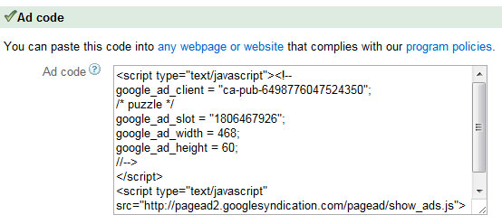
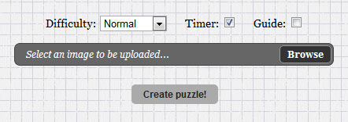

Created: 6/7/2012
By: Kennedy Rose
Email: kennedy@kennedyrose.com
Requirements: A web server with at least 640kb of space, PHP 5 or higher.
Note: Thank you for purchasing my script. If you have any questions that are not answered with this help file, please feel free to email me at kennedy@kennedyrose.com.
To setup "Puzzle Creator With Ad Support" on your server, just upload the contents of this entire package to your server. Make sure that you change the permissions on all files to "0644" if not already set. Or, if you are on a Windows server, set "allow" to "anonymous web user" for the whole directory.
Your default puzzle should appear in the director that you uploaded the script to. Example: If you uploaded the script to the /puzzle/ directory, it should appear here:
http://www.yoursite.com/puzzle/
That's it! The rest of this readme will cover more advanced options. So there is no need to read any further if this is all you wish to do.
To insert an ad at the bottom of the puzzle, first open up "ad.txt" with any text editor. This is an empty file that came with this package.
Copy and paste any ad code here that you wish to display at the bottom of the puzzle. Example: Google Adsense code will look something like this:

So you would just select that entire block of code and paste it into "ad.txt" with a text editor.
The next step is to upload "ad.txt" that you have just edited onto the server. After that, your advertisement will show up at the bottom of "index.php".
If you would like to change the default puzzle (the puzzle that loads if no image has been uploaded), replace "default.jpg" located in the /puzzles/ directory. The script always uses the "default.jpg" if a new image has not been uploaded by the player yet.
If you would like to upload a new image to temporarily use as a puzzle, first click "options" in the upper-right hand corner of the page. Then click, "Upload an image to use as a puzzle!" Now your screen should look something like this:

Click "Browse" to browse your computer for an image. Once you have selected an image, click "Create puzzle!" Once the image is done uploading, a new puzzle should appear with the image you selected.
To delete any images that are not the default image (default.jpg) from the /puzzles/ folder, just run "cleanup.php" from your browser. Example: If you uploaded the script to the directory, /puzzle/, you would type the following into your browser:
http://www.yoursite.com/puzzle/cleanup.php
Once the script is done deleting all of the uploaded images, the words, "Images deleted successfully!" should display on the screen.
To display the options menu, click the "options" button located in the upper-right corner of the puzzle area.
Difficulty: This selects the difficulty from easiest to hardest. The default is "Normal".
Timer: Having this box checked will display the amount of time taken to complete the puzzle at the top of the screen. The default is "on". (Note: Even if the timer is turned off, you are still being timed and can place a high score. It just won't display the time at the top.)
Guide: Having this box checked will display what the completed image will look like behind the puzzle pieces. The default is "off".
View Scoreboard: Clicking this link will show you the current lowest times. If your time is less than the times on the scoreboard, your time will be recorded here. (Note: Clicking this link will end the current puzzle.)
If you catch any errors, email me at kennedy@kennedyrose.com
Any code that is not mine has been used with permission under an MIT or GPL license. Some code has been slightly modified for the purposes of implimentation and speed. See their respective websites for the original code.
Thank you for purchasing this script! If you have questions, feel free to email me at kennedy@kennedyrose.com. Thanks again!
Kennedy Rose